Defiende la base
Defiende la base es un juego en el que debes poner defensores que disparen a los zombis que quieren llegar a tu base antes de que estos cumplan con su objetivo. Tu único objetivo es sobrevivir el mayor tiempo posible, mientras que las hordas de zombis cada vez son mayores.
En este tutorial crearemos nuestra propia versión de este clásico juego en el motor Pilas Engine!
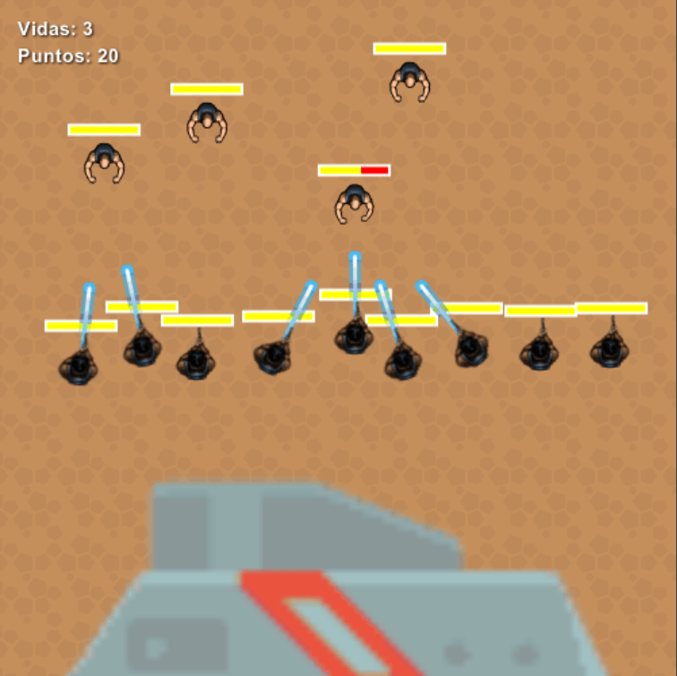
Para continuar con este tutorial necesitaras descargar los recursos desde aquí
Y ten en cuenta que puedes jugar y ver el código del proyecto aquí.
ATENCION: Este tutorial requiere un nivel básico de conocimiento de pilas, si nunca programaste antes, te recomiendo primero ver este tutorial. Caso contrario, ¡Que te diviertas!
Para empezar, eliminaremos el contenido que nos trae el proyecto por defecto.
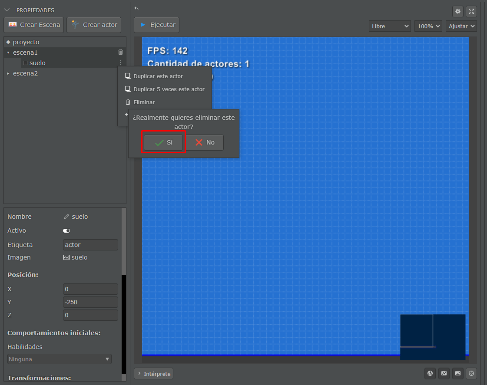
Crearemos los actores e importaremos las imágenes que necesitamos para los mismo, para esto vamos a “Crear Actor”:
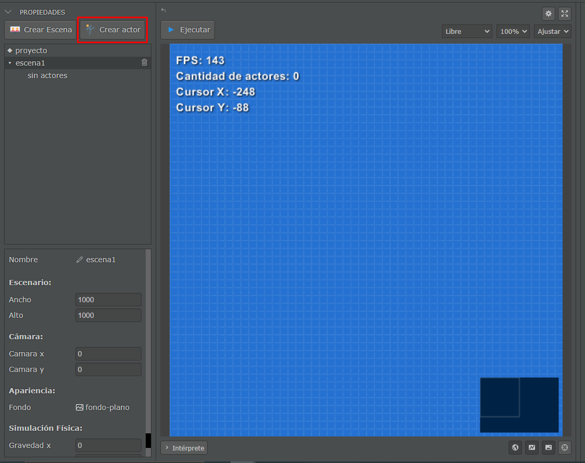
Y seleccionaremos el actor “Sin Imagen”.
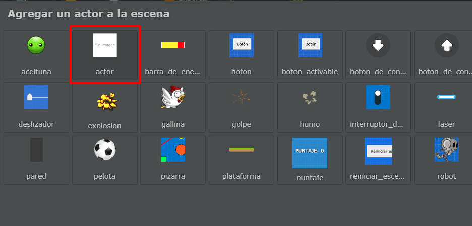
Seleccionamos el actor y vamos a cambiar la propiedad “Imagen”
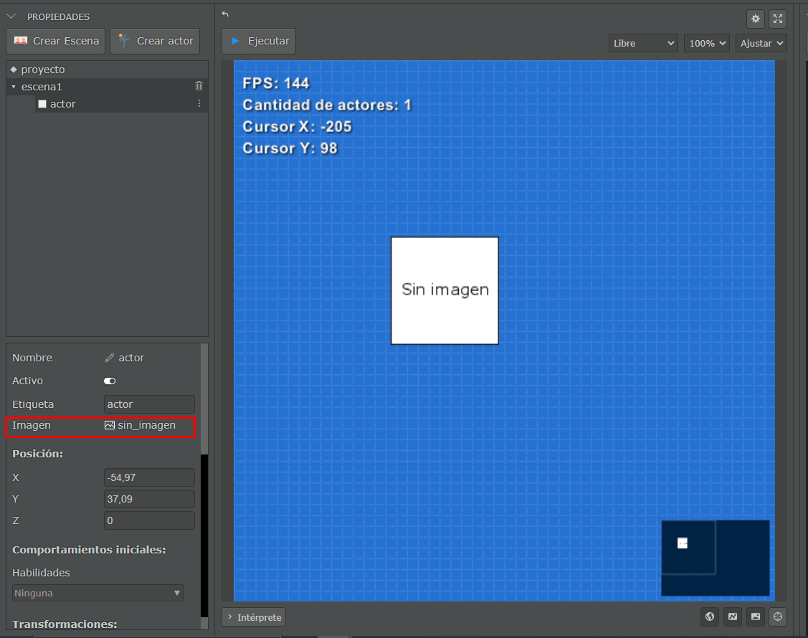
Seleccionamos la opción “Importar Imagen”, y buscaremos los recursos del proyecto que descargamos para el tutorial. De estos recursos, podemos seleccionar cualquiera de las 2 imágenes de defensores. Para esta ocasión voy a utilizar la que se llama “police-idle.png”. Una vez seleccionada veremos que podemos seleccionar la imagen en el panel.
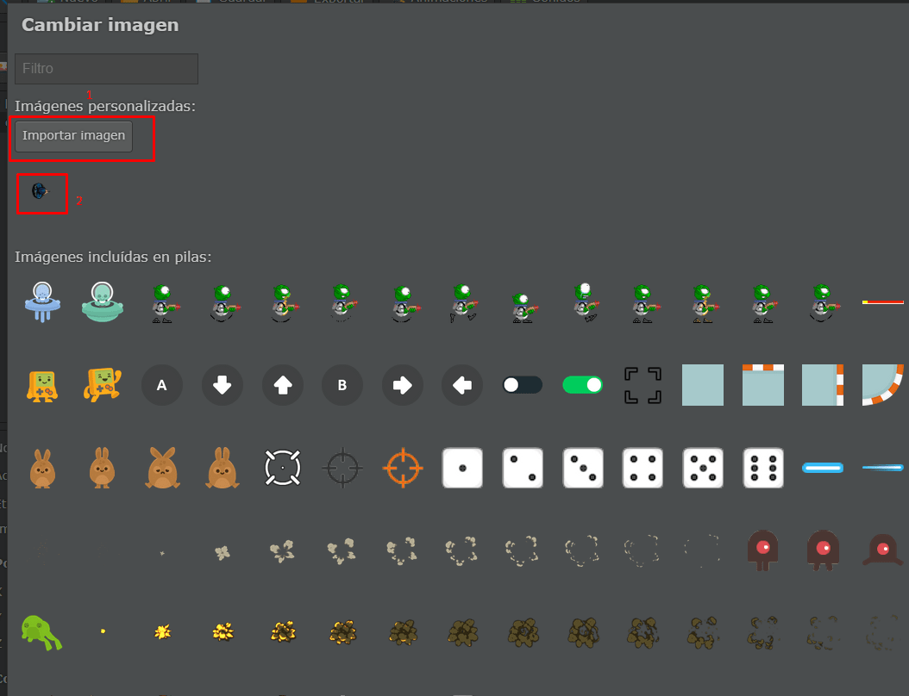
Vamos a las propiedades y cambiamos la propiedad “Nombre” de “actor” a “defensor”, y también cambiaremos la etiqueta por el mismo valor.
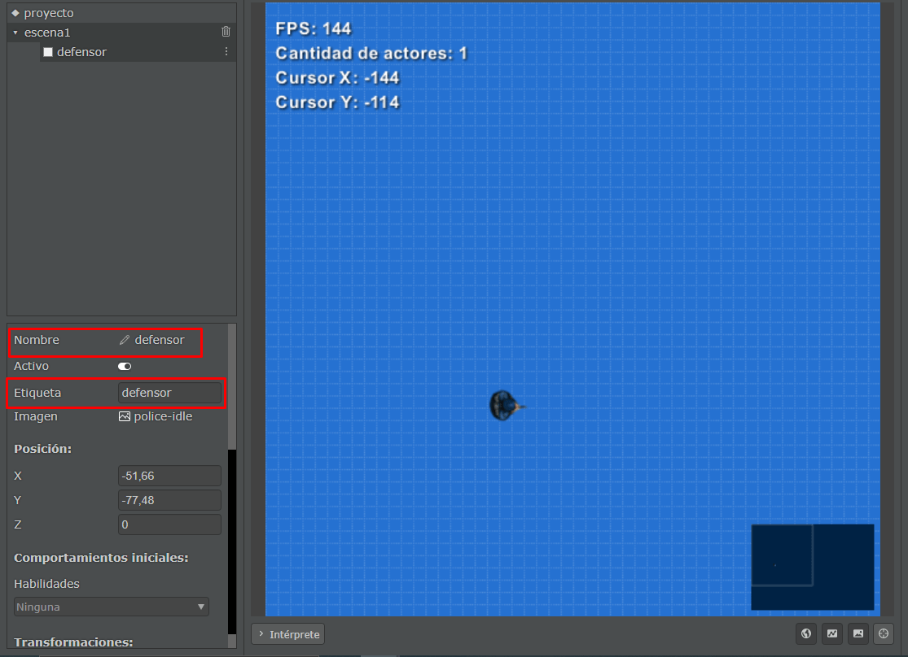
Y listo, ya tenemos a nuestro policía en el juego. Repetiremos el proceso para crear al zombi, seleccionando el archivo “zombie_idle.png” como imagen.
Al hacer esto, notaremos que el zombi es mucho mas grande que nuestro defensor, por lo que
buscaremos las propiedades “Escala x” y “Escala y” y les pondremos el valor 0.5.
De esta forma tendremos a los 2 actores de mas o menos el mismo tamaño.
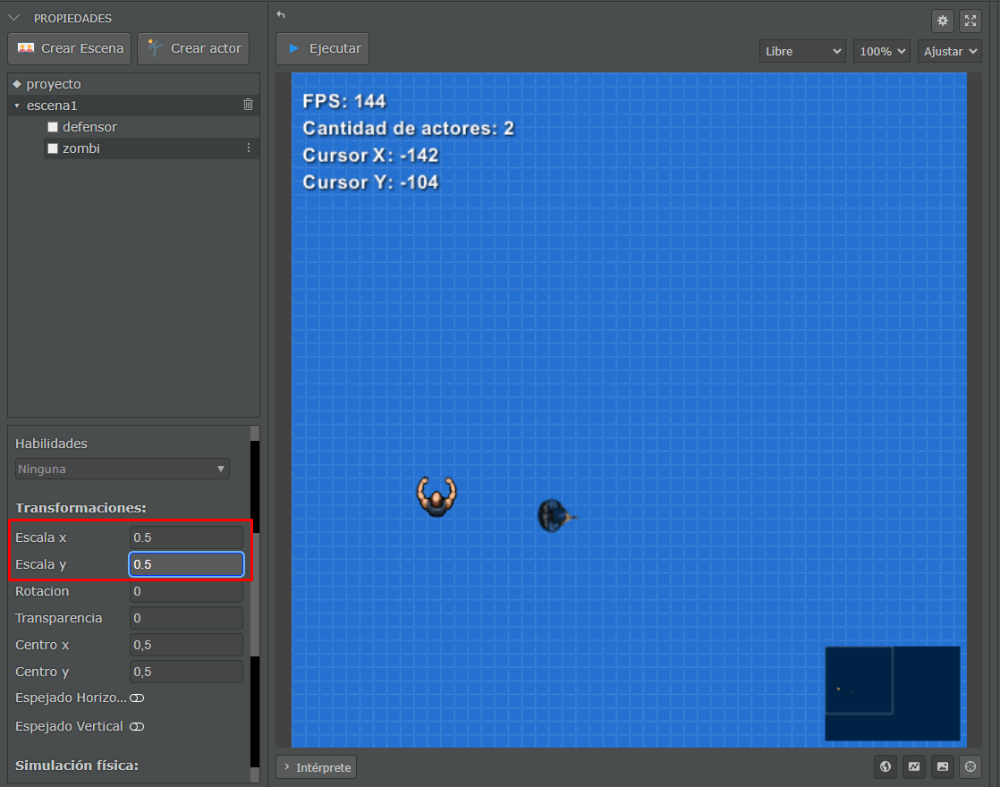
Lo siguiente que haremos es modificar el escenario para que quede como en la primera imagen. Para eso seleccionaremos a la escena y le cambiaremos la imagen por la que mas nos guste, siguiendo los pasos que realizamos para ponerle la imagen a nuestro zombi y policía, con la diferencia de que la propiedad en este caso se llama “Fondo”.
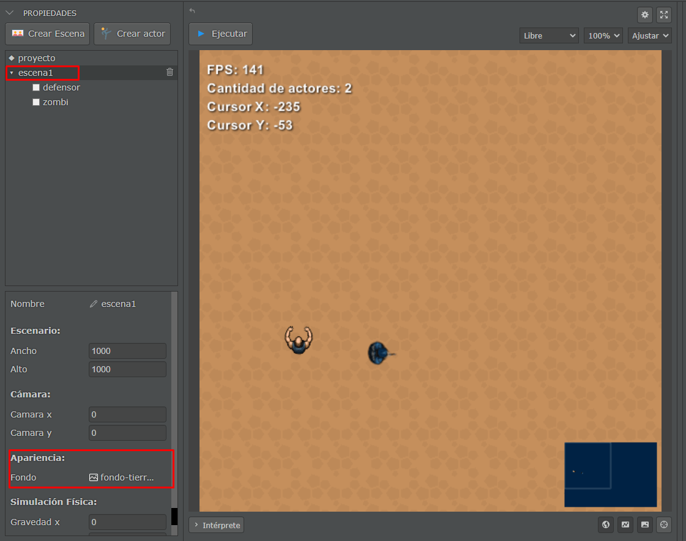
Ahora vamos a agregar la base para dejar listo nuestro escenario, para eso agregamos un nuevo actor
sin imagen, le ponemos nombre y etiqueta “base” y le seleccionamos la imagen “tanque_base”, con
escala 5 en x e y.
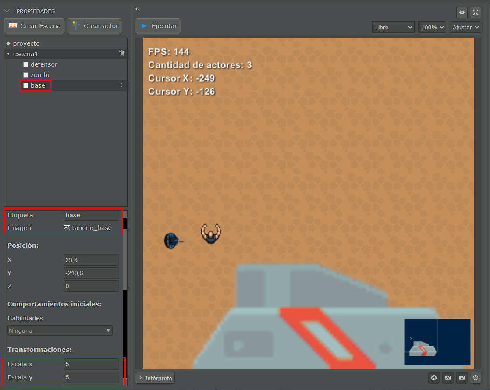
Antes de comenzar con el código, rotaremos a nuestros actores para que queden los defensores
mirando para arriba, y los zombis mirando hacia abajo, para eso seleccionamos al defensor, buscamos
la propiedad rotación y la ponemos en 90:
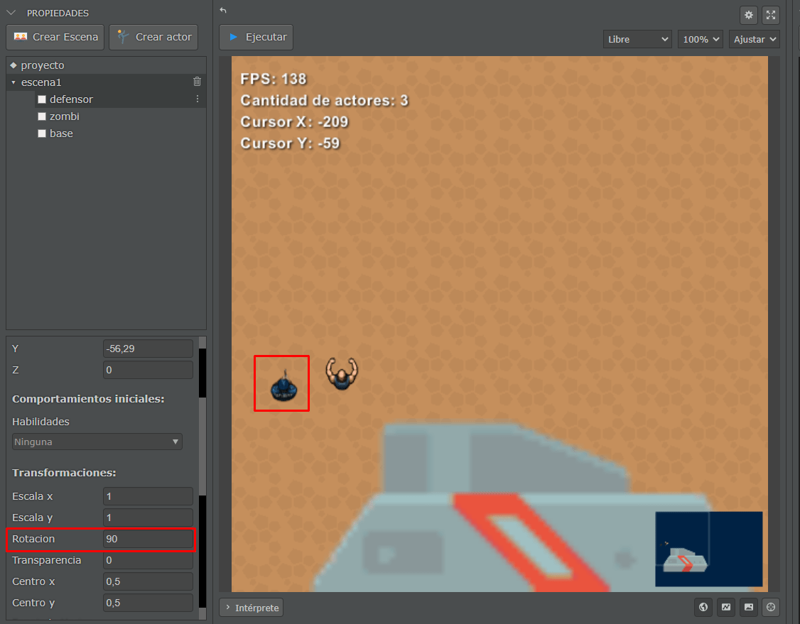
Lo mismo haremos con el zombi, poniéndole una rotación de 180 para que mire hacia abajo.
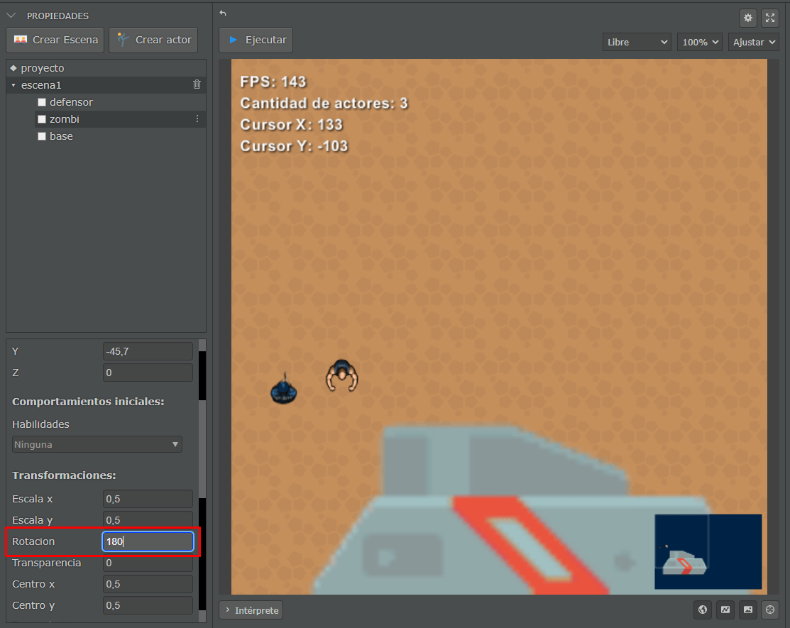
Funcionalidad
Lo primero que haremos será generar zombis que se muevan hacia la base, para esto, seleccionamos al actor zombi que creamos, abrimos la solapa código y escribiremos lo siguiente:
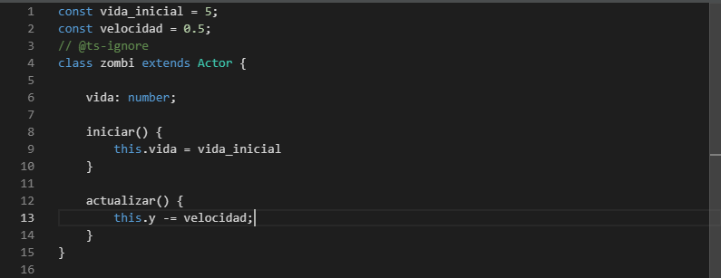
Las primeras 2 líneas definen constantes que utilizaremos dentro de nuestro código. Esto lo haremos así para que mas adelante, si queremos modificar los atributos de un zombi lo hagamos sin necesidad de analizar el código, ni de tener que repetir los cambios en todos los lugares donde pusimos el valor anterior.
Luego, en la línea 6 creamos el atributo vida, lo que representaría la vida del zombi en todo
momento, y en la línea 9 la inicializamos con el valor que le dimos a “vida_inicial”.
La línea 13 es la encargada de mover al zombi constantemente hacia abajo. Si bien este código cumple su funcionalidad, cuando ejecutamos el juego vemos que el zombi se mueve, pero no realiza ninguna animación, lo que lo hace poco atractivo. Por esto mismo crearemos una animación y se la asignaremos al zombi.
Para crear una animación vamos al botón animaciones en la parte superior de la pantalla.
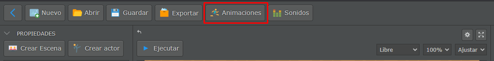
Esto nos abrirá un modal con las animaciones que ya existen en nuestro proyecto (La mayoría ya vienen con el proyecto cuando lo creamos).
Seleccionamos el botón “Crear una animación:
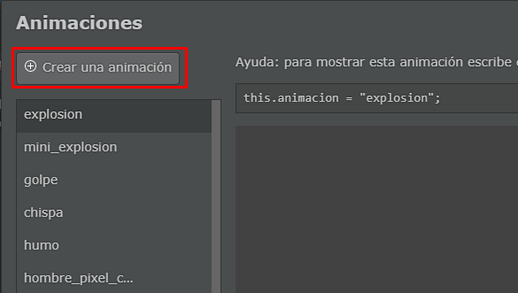
Pondremos el nombre “caminar_zombi”, y pondremos 12 cuadros por segundo.
Tocamos el botón con el signo +, lo que nos llevara a seleccionar una imagen, seleccionamos “importar imagen” y buscaremos en los recursos descargados para el proyecto todas las imágenes que se llamen “zombie-walk-n” siendo n el orden en que deberemos poner las imágenes en la animación.
Deberíamos tener todas las imágenes cargadas como se muestra en la imagen:
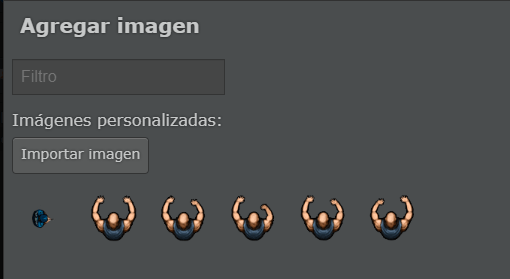
Seleccionaremos primero la imagen “zombie-idle” y veremos que se agrego a nuestra animación:
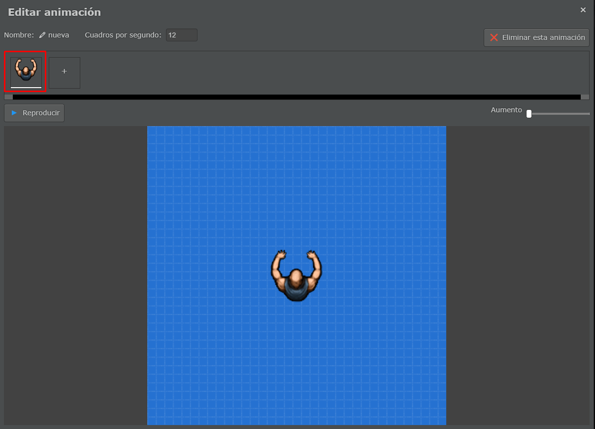
Agregaremos en el orden antes mencionado el resto de las imágenes, lo que resultaría así:
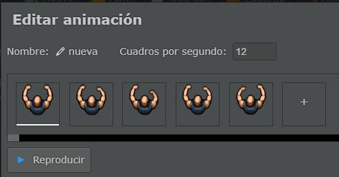
Si le damos a reproducir veremos que nuestro zombi camina. Una vez terminado esto cerramos esta ventana y veremos que en la lista de animaciones aparece nuestra animación con su nombre:
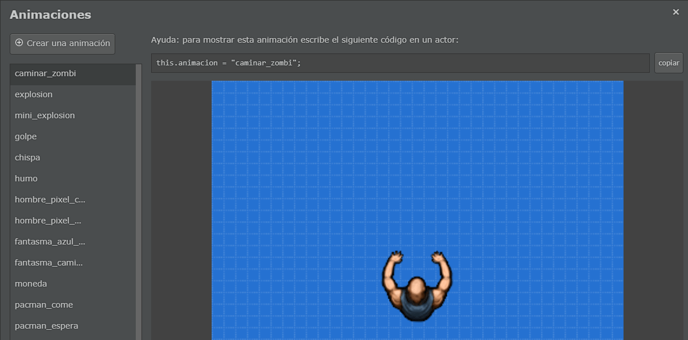
Copiamos la línea de código que nos muestra en la parte superior y la pegamos en el método
iniciar del zombi.
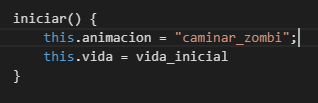
Y listo, nuestro zombi ya tiene su animación de caminar.
Lo siguiente que haremos será que los zombis se generen automáticamente en la parte superior, y
haremos algunos ajustes de dificultad para que el juego se ponga más difícil cuando pasa el tiempo.
Para esto seleccionaremos la escena, agregaremos las constantes: ajustar_tiempo_entre_zombis,
ajustar_cantidad_de_zombis y maximo_zombis_a_clonar, dándoles los valores indicados en la
imagen.
También crearemos las variables tiempo_entre_zombi_minimo, tiempo_entre_zombi_maximo y
tiempo_proxima_clonacion, dándoles los valores indicados en la imagen.
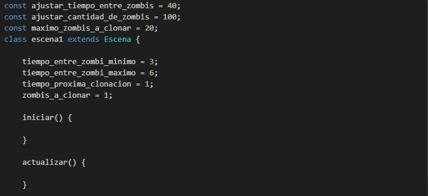
Estos valores iniciales significan:
ajustar_tiempo_entre_zombis: Cada 40 segundos ajustaremos el rango de tiempo en el que se clonaran zombis, haciéndolo cada vez mas pequeño.ajustar_cantidad_de_zombis: Cada 100 segundos ajustaremos la cantidad de zombis que clonaremos cada vez que debamos realizar la clonación.maximo_zombis_a_clonar: El máximo de zombis que clonaremos por cada clonación serán 20.tiempo_entre_zombi_minimo: El tiempo mínimo que tiene que pasar al principio para realizar una clonación. (Este valor será ajustado cada 40 segundos).tiempo_entre_zombi_maximo: El tiempo máximo que tiene que pasar al principio para realizar una clonación. (Este valor será ajustado cada 40 segundos).tiempo_proxima_clonacion: El tiempo en el que efectivamente realizaremos una clonación. Este valor cambia cada vez que clonamos.zombis_a_clonar: La cantidad de zombis que efectivamente clonaremos al momento de realizar una clonación. (Este valor será ajustado cada 100 segundos).
Además, agregaremos los métodos “cada_segundo”, “clonar_zombis”, “calcular_tiempo_entre_zombi”, “ajustar_tiempo_de_clonacion” y “ajustar_cantidad_por_clonacion”.
Analizaremos a continuación cada método:
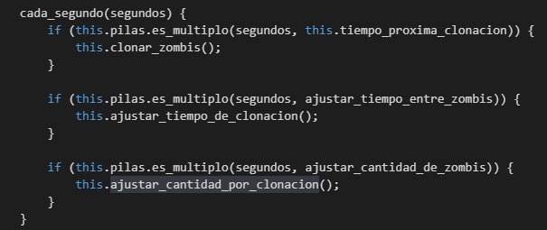
cada_segundo(segundos):
Este método es propio de pilas, nosotros solo lo sobreescribimos. Se ejecuta 1 vez por segundo, y
nos sirve para realizar acciones que dependan del tiempo. En nuestro caso, utilizamos la función
es_multiplo pilas para saber si el valor del primer parámetro (en este caso, el segundo) es
múltiplo del valor que le pasamos como segundo parámetro.
De esta forma, logramos que cada cierto tiempo se ejecute la función que queramos. En el primer
if logramos que los zombis se clonen cada tiempo_proxima_clonacion (Que iniciamos como 1 y
que tendrá un valor arbitrario entre 3 y 6 inicialmente). En el segundo if logramos que cada
ajustar_tiempo_entre_zombis(40s) se ajuste el rango de tiempo que tiene que pasar para que se clone
otro zombi. En el tercer y ultimo if logramos que cada ajustar_cantidad_de_zombis(100s) se ajuste
la cantidad de zombis a clonar.
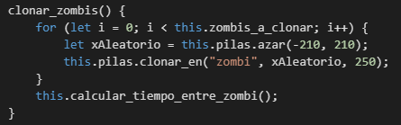
clonar_zombis():
Este método es desarrollado por nosotros. Lo que hace es clonar la cantidad de zombis “zombis_a_clonar” en un x aleatorio.
Para lograr que se genere en un x aleatorio, usamos la función de pilas azar, la cual recibe como
parámetros el limite inferior y superior del rango de valores que puede devolver. Eso lo guardamos
en la variable xAleatorio y luego lo usamos en la función clonar_en, la cual es de pilas y recibe
como parámetro 3 valores. El primero es el nombre del actor que queremos clonar. El segundo el
valor de x en el que lo queremos clonar, y el tercero el valor de y en el que lo queremos clonar.
En este caso elegí 250 porque de esa forma el zombi aparece fuera de escena, lo que esconde el
efecto de que aparezca de repente en pantalla. Al ultimo llamamos al método
calcular_tiempo_entre_zombi para que se recalcule cuando volveremos a llamar a esta función.
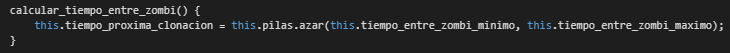
calcular_tiempo_entre_zombi():
Este método es desarrollado por nosotros. Lo que hace es calcular según un valor al azar dado por
el rango [tiempo_entre_zombi_minimo, tiempo_entre_zombi_maximo] y guardarlo en la variable que
utilizamos para saber cuando debemos llamar al método clonar_zombis().
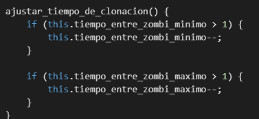
ajustar_tiempo_de_clonacion():
Este método es desarrollada por nosotros. Lo que hace es ajustar el rango de tiempo en el cual
puede clonarse un zombi al disminuir los valores de tiempo_entre_zombi_minimo y
tiempo_entre_zombi_maximo. Los ifs que vemos en la función verifican que los valores del rango
no sean ni 0 ni negativo antes de decrementar el valor de las variables.
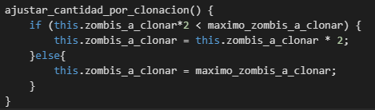
ajustar_cantidad_por_clonacion():
Este método es desarrollado por nosotros. Lo que hace es ajustar la cantidad de zombis a generar
cada vez que se llame a la función clonar_zombis(). El if valida que la cantidad nueva que
vayamos a poner no sea mayor a la cantidad máxima definida en maximo_zombis_a_clonar, y en el
caso de que lo sea, simplemente ponemos el valor nuevamente en máximo_zombis_a_clonar. Según la
configuración actual, cada 100 segundos se duplicará la cantidad de zombis a clonar.
Si ejecutamos ahora nuestro juego, veremos que los zombis empiezan a aparecer y a moverse infinitamente hacia abajo, lo cual parece divertido, pero todavía no dañan a nuestra base, por lo que todavía no terminamos con su funcionamiento. Por otro lado, todavía vemos los 2 actores que creamos al principio y que nos sirven solamente para ser clonados.
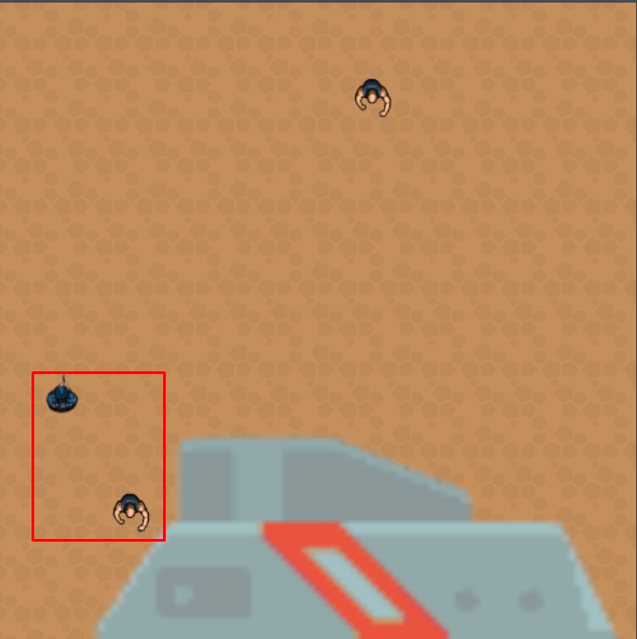
No podemos borrar estos actores ya que no tendríamos como clonarlos, entonces lo que haremos será desactivarlos buscando la propiedad Activo y quitando el check. Haremos esto para ambos actores.
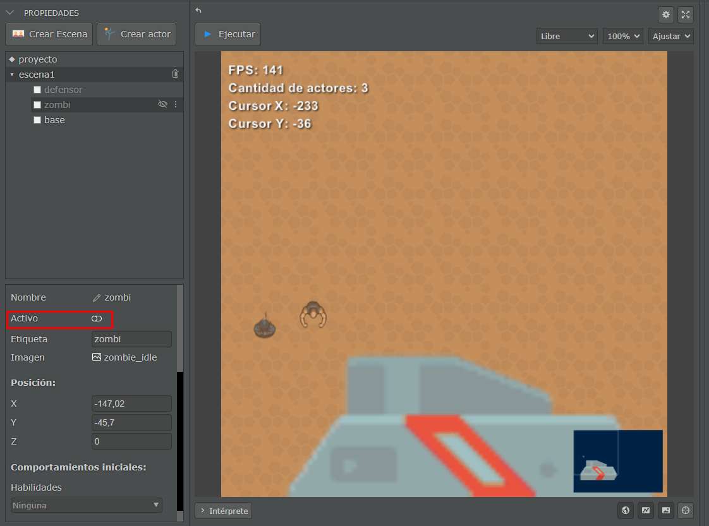
Y listo, ahora si bien cuando el juego esta parado los vemos como transparentes, cuando ejecutemos el juego desaparecerán, y aun así podremos clonarlos.
Ahora abordaremos el tema de las colisiones. Para poder quitarle vida cuando un zombi choque con un defensor o con la base, necesitamos que ambos actores tengan un área de colisión. Para esto, iremos a las Propiedades de nuestros actores y le asignaremos una “Figura”, y ajustaremos el tamaño de la forma según nos parezca conveniente. Además, quitaremos la opción “Dinámica”, ya que no queremos que se simulen físicas como la gravedad en estos actores.
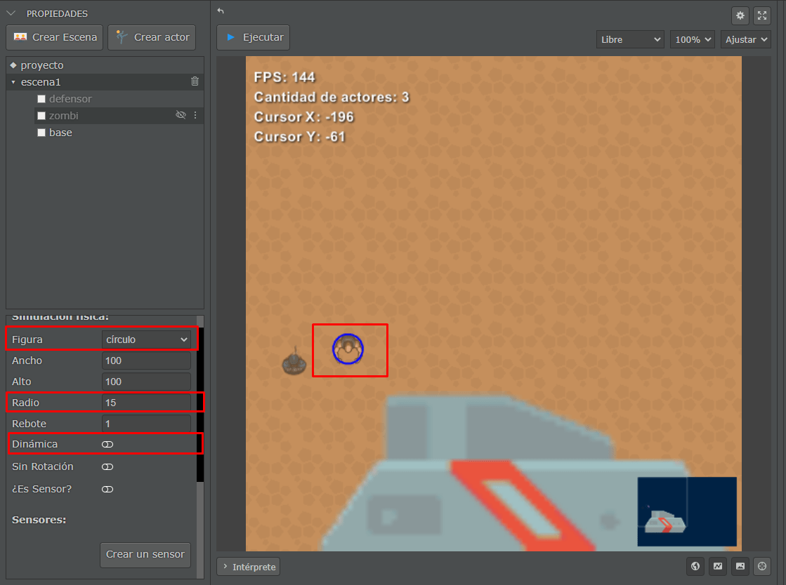
Notaremos que cuando asignamos la figura, en este caso circular, veremos la figura sobre el actor, lo que nos da facilidad para acomodarla como queramos. Haremos esto mismo para el actor defensor, asignando exactamente los mismos valores (Figura circular de radio 15 no dinámica). Pero para la base, utilizaremos una figura Rectangular, de ancho 510 y de alto 200, para que ocupe toda el área de la base.
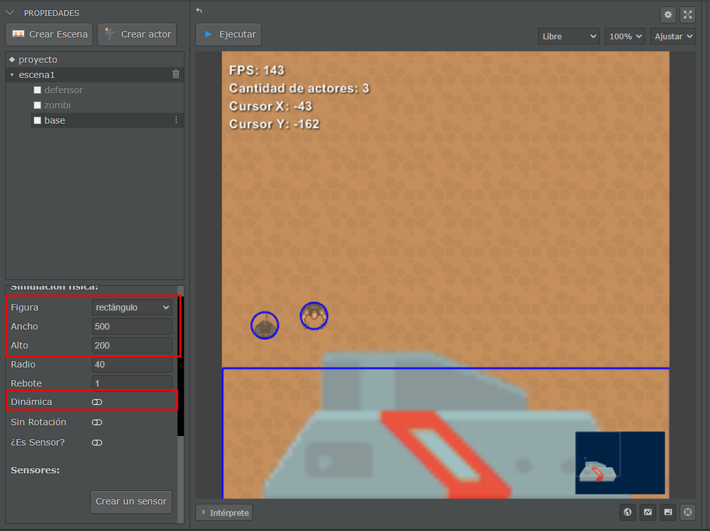
Bien, ahora nuestros actores pueden colisionar entre si.
Ahora haremos que el zombi al chocar con la base, le envíe un mensaje de que colisiono y que debe perder vida. Para esto, seleccionamos al zombi y vamos a agregar el siguiente método en su código:
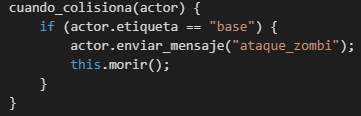
cuando_colisiona(actor):
Es un método propio de pilas que reescribimos. Este método se ejecuta cuando un actor (en este caso, nuestro zombi) colisiona con otro actor. Recibe como parámetro el actor con el que se acaba de colisionar.
En este caso, necesitamos asegurarnos de que contra lo que choco nuestro zombi es la base y no cualquier otro actor, ya que no haremos lo mismo si el zombi choca con otro zombi que si este choca con la base o un defensor.
Para identificar al otro actor utilizamos su etiqueta (En este caso, nosotros utilizamos el mismo
nombre que la etiqueta por lo que puede resultar un poco confuso, pero cabe aclarar que para estos
casos se utiliza la etiqueta) y verificamos si efectivamente ese actor es la base. Si es la base,
le enviaremos un mensaje de que acaba de ser atacada, y mataremos al zombi. El método morir() se
muestra a continuación:
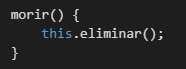
La forma de eliminar un actor en pilas es usar la función eliminar() propia del actor al que se
quiere eliminar.
Entonces, hasta el momento el zombi choca con la base, le envía un mensaje y desaparece, pero
todavía no especificamos que debería hacer la base con ese mensaje. Para esto, utilizaremos la
función cuando_llega_un_mensaje(mensaje) de pilas. Seleccionamos la base, vamos a su código y
escribimos lo siguiente:
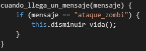
cuando_llega_un_mensaje(mensaje):
Este es propio de pilas, nosotros lo sobrescribiremos. Se llama cuando alguien le envía un mensaje a este actor. En este caso en particular, solo nos interesan los mensajes que contengan “ataque_zombi”, ya que eso nos indicara que nos atacaron y que debemos hacer algo, como disminuir la vida de la base.
Para disminuir la vida de la base, primero debemos crear una variable que represente la vida de la misma, a su vez mostrar la vida en pantalla al jugador, entonces tendremos:
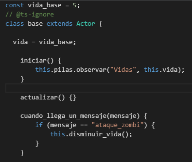
Creamos la constante vida_base con la cantidad de vidas que se desee, y una variable vida que
represente la vida actual de la base. Para mostrar las vidas que le quedan al jugador, utilizamos
el método observar de pilas, que recibe como parámetro el nombre que queremos que se muestre al
lado del valor de la variable que especificamos en el segundo parámetro. Bien, ahora podemos
agregar correctamente la función disminuir_vida:
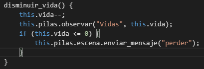
Este método lo único que hace es restarle 1 punto de vida cada vez que es llamado y actualizar el
valor en la pantalla. Nótese que volvemos a llamar al método observar de pilas con la misma
variable así se actualiza el valor de la pantalla. Además, agregamos una verificación de que pasa
si la vida es menor o igual a 0, en tal caso, deberíamos hacer perder al jugador, lo cual
lograremos enviándole un mensaje a la escena, la cual se encargara mas delante de avisarle al
jugador que perdió.
Si probamos nuestro juego ahora, los zombis bajaran constantemente hasta la base y chocaran desapareciendo y disminuyendo la vida de la base infinitamente, lo cual se acerca a lo que queremos, pero todavía nos queda mucho trabajo por delante.
Para empezar, la desaparición del zombi no es muy convincente, por lo que agregaremos algún efecto que demuestre que el zombi acaba de hacer daño y morir.
¡Crearemos un efecto de explosión!
Para esto, vamos a “Crear actor” y seleccionamos la explosión.
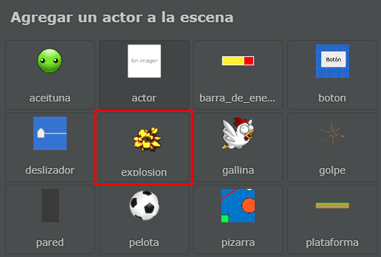
Quitaremos la opción activo de la explosion ya que no queremos que este ahí cuando empieza
nuestro juego e iremos al código de nuestro zombi, particularmente a la funcion morir(), y
agregaremos una simple linea de código.
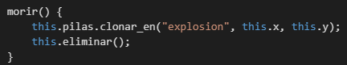
Utilizando el metodo que ya vimos clonar_en, pasamos como parámetro el nombre del actor que
queremos clonar (la explosión en este caso) y le indicamos que se clone en la posición x e y de
nuestro zombi. Y voila, habemus explosión (Michael Bay estaría orgulloso).
El comportamiento de nuestro zombi esta casi listo, entonces avanzaremos un poco mas con el control del juego. Para empezar, no es bueno presentar el juego y no darle tiempo al jugador a que se prepare antes de que empiecen a aparecer zombis, por lo que agregaremos un botón para iniciar el juego.
Además, hemos hecho que la base envíe un mensaje a la escena diciendo que el jugador perdió, pero la escena no se está enterando de que recibió un mensaje, por lo que no hace nada. Agregaremos en la escena una variable de control que nos permita saber si estamos jugando o si todavía no empezó el juego, o también si el jugador ya perdió, y con esta variable agregaremos validaciones para que el juego no se ejecute en momentos que no es debido.
Lo primero que haremos será agregar el botón Jugar, para lo que iremos a “Crear actor” y seleccionaremos el actor “boton”:
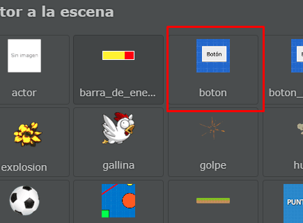
Luego, cambiaremos el nombre de este actor por “boton_jugar”, cambiaremos la propiedad “Texto” por
“Jugar” y por ultimo lo pondremos en la posición (0, 0)
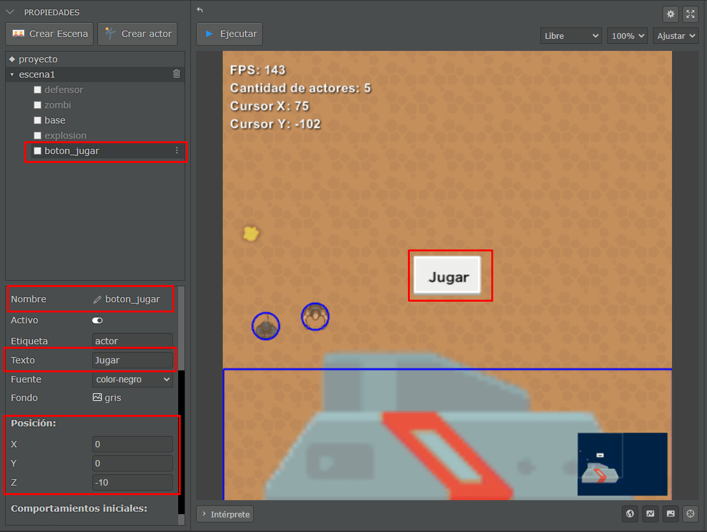
Veremos que este botón ya tiene cierto código en su interior, pero lo único que nos interesa es la
función cuando_hace_click(), la cual debemos hacer que le avise a la escena de que el juego tiene
que empezar, y esconder el botón para que no moleste al momento de jugar.
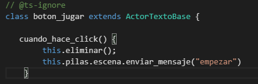
Ese será todo el comportamiento de nuestro botón Jugar. Ahora debemos ir a la escena y enseñarle a recibir mensajes. Seleccionamos la escena y añadimos la variable jugando, la cual será la variable que nos definirá si estamos en juego o no.
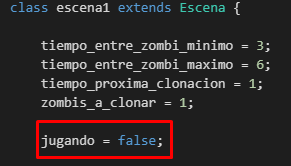
Y también el método cuando_llega_un_mensaje con el siguiente código:
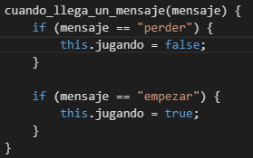
De esta forma, cuando el mensaje sea “perder” haremos que jugando sea false, y cuando sea
“empezar” tenga el valor true. Pero esto todavía no hace nada, ya que debemos agregar
validaciones para que el juego solo funcione si estamos jugando.
Lo primero que haremos será agregar una condición al método cada_segundo(segundos) de nuestra
escena
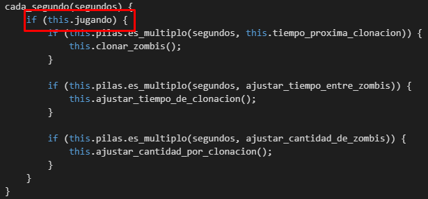
Con esto alcanza para que los zombis no aparezcan si no estamos en juego. Si ejecutamos nuestro juego ahora, veremos que no pasara nada hasta que toquemos el botón jugar, y solo luego de eso empezaran a aparecer zombis. De la misma forma, si llegamos a 0 vidas, veremos que los zombis dejaran de aparecer porque el mensaje “perder” llego a la escena. Pero todavía hay algo raro. Cuando perdemos, el juego no nos avisa que perdimos, ni nos da ninguna opción de volver a jugar. Y aun mas extraño, perdemos y los zombis que quedaron siguen bajando y dañando nuestra base. Para solucionar esto, primero agregaremos un texto que nos indique que perdimos, y un botón que nos permita volver a jugar.
Vamos a “Crear actor” y seleccionamos el actor “texto”
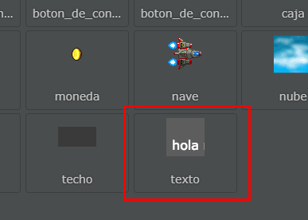
Seleccionamos el actor y cambiaremos las siguientes propiedades:
- Nombre: gameover
- Activo: desactivado
- Texto: Game-Over
- Posición X: 235
- Posición Y: 100
- Escala X e Y: 3.
Entonces, deberíamos ver algo así:
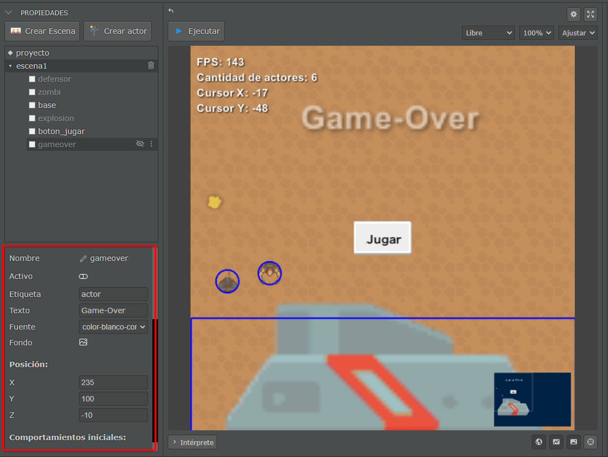
Cabe aclarar que pueden jugar con los valores que deseen.
Además, crearemos otro botón que nos servirá para reiniciar el juego. Por suerte, pilas ya trae un actor que se encarga de reiniciar la escena. Para agregarlo vamos a “Crear Actor” y seleccionamos el que se llama “reiniciar_escena”
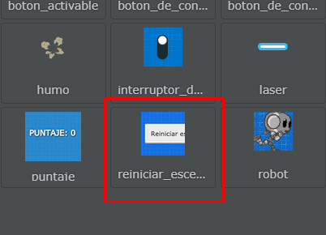
Una vez agregado le cambiaremos el texto para que diga “Volver” y lo desactivaremos para que no aparezca hasta que no se lo pidamos. (Nota: No importa que este botón este encima del botón Jugar, ya que nunca estarán los dos botones al mismo tiempo en el juego).
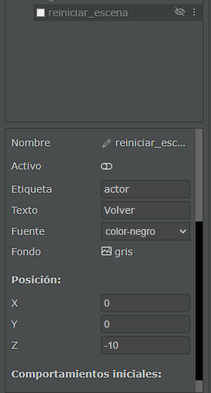
Bien, hasta aquí agregamos los actores necesarios para el control de nuestro juego, pero todavía no
hemos lidiado con mostrarlos cuando sea necesario, y ni hablar de que los zombis siguen ahí cuando
perdemos. Para terminar con este tema, iremos a la función cuando_llega_un_mensaje(mensaje) de
la escena y la modificaremos de la siguiente forma:
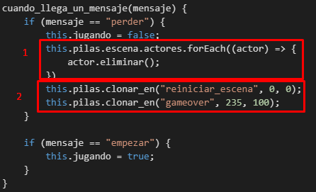
En el recuadro 1, recorremos todos los actores de la escena y los eliminamos, de esta forma no
veremos ningún actor en la escena al momento de perder (La función forEach se aplica a las listas
para recorrerlas y hacer algo con su interior, en este caso la escena tiene una lista de actores
llamada “actores”, la cual contiene todos los actores que participan en la escena).
En el recuadro 2, estamos clonando el botón reiniciar escena para que aparezca, y también al mensaje “Game Over”, ambos en las posiciones que definimos al principio.
Si probamos nuestro juego ahora, veremos que cuando las vidas llegan a 0, efectivamente
perderemos y tendremos la opción de volver a empezar el juego. Esto significa que es momento de
darle al jugador la opción de defender su base. Para esto, haremos que el jugador empiece con una
determinada cantidad de puntos, que podrán ser gastados en crear defensores que dispararan a los
zombis. A su vez, cuando el defensor mata a un zombi, este le dará puntos para poder conseguir mas
defensores. Los defensores serán puestos en la escena cuando el jugador haga click en
alguna parte.
Lo primero que haremos será crear el puntaje del jugador para que pueda “comprar” defensores. Para
ello, iremos al código de la escena y agregaremos las constantes puntos_maximos,
maximo_y_para_defensor y minimo_y_para_defensor, y crearemos la variable puntaje iniciándola
con un valor arbitrario. Además, añadiremos una variable puedo_clonar_defensores que nos servirá
como validación al momento de que el jugador toque el botón “Jugar”, ya que queremos que los
defensores se clonen cuando se hace click, pero no si todavía no estamos jugando.
Entonces el código de nuestra escena quedaría así:
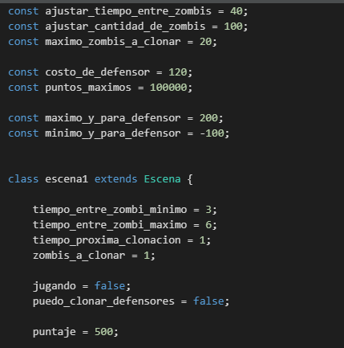
El significado de las constantes y variables que agregamos es el siguiente:
costo_de_defensor: Los puntos que le quitara al jugador crear un defensor.puntos_maximos: La cantidad máxima de puntos que puede acumular el jugador. Esto nos servirá para que si el juego se extiende mucho, no colapse la memoria del dispositivo en el que se esta ejecutando el juego.máximo_y_para_defensor: Valor que nos servirá para delimitar la zona en la que el jugador puede posicionar defensores.mínimo_y_para_defensor: Valor que nos servirá para delimitar la zona en la que el jugador puede posicionar defensores.puedo_clonar_defensores: Variable que utilizaremos para que no se creen defensores si todavía no se empezó el juego.puntaje: El puntaje del jugador.
Una vez agregado todo esto, crearemos los métodos cuando_hace_click y esta_en_rango_clonacion.
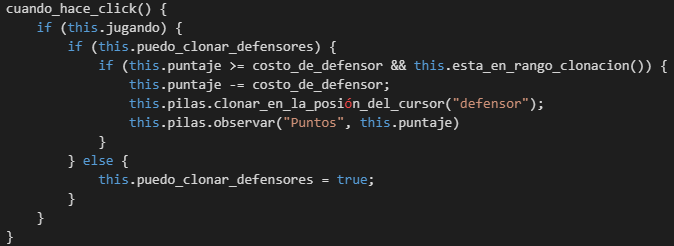
Lo primero que hacemos en este método es verificar que el jugador este jugando. Luego, verificamos
que puede clonar defensores. Esta verificación es necesaria ya que cuando el jugador toca el botón
“Jugar” inmediatamente pilas toma como que ya estamos en juego y ejecuta la función
cuando_hace_click() de la escena, lo que conlleva a que si no tenemos esta validación, se cree un
defensor en la posición donde hicimos click para tocar el botón jugar, lo cual no es nuestra
intención.
Debajo de esta verificación verificamos que el jugador tiene los puntos necesarios para pagar un
defensor (this.puntaje >= costo_de_defensor) y también (&&) que se hizo click en el rango
permitido para crear defensores (Nótese que se esta llamando a un método que valida esto, la cual
explicaremos a continuación). Si esta condición se cumple, entonces restamos los puntos del jugador
(this.puntaje -= costo_de_defensor), llamamos al método clonar_en_la_posición_del_cursor de
pilas, que recibe como parámetro el nombre del actor que queremos clonar, y por ultimo le mostramos
en la pantalla al jugador cuantos puntos le quedaron. Pero esto no lo habíamos hecho previamente,
entonces esta misma línea debemos agregarla en el método iniciar.
El método esta_en_rango_clonacion() es el siguiente:
Este método asegura que la posición del cursor en y (obtenida con pilas.cursor_y) al momento de hacer click sea menor al máximo valor permitido en y, y mayor al mínimo. De esta forma, limitamos el área de creación.
Si ejecutamos nuestro juego, veremos que podemos clonar defensores en el espacio, pero estos no hacen absolutamente nada. No colisionan, no defienden, no se mueven, nada. Entonces, debemos darle vida a nuestros defensores.
Seleccionamos el defensor que hicimos al principio del tutorial y vamos a su código. Agregaremos las constantes “distancia_para_atacar”, “tiempo_entre_ataque” y “vida_defensor” y las variables “objetivo” y “vida” como se indica en la imagen.
El significado de las constantes y variables agregadas es el siguiente:
distancia_para_atacar: Distancia de visión del defensor. Es la distancia máxima a la que un defensor puede encontrar un objetivo.tiempo_entre_ataque: Es el tiempo que el defensor se tomara entre disparos.vida_defensor: es la vida máxima con la que empezara el defensor.objetivo: Variable que utilizaremos para definir a quien debe atacar, la inicializamos en null porque cuando creamos al defensor, este no ha encontrado ningún objetivo.vida: la vida actual del defensor.
Además, modificaremos el método actualizar() y agregaremos otros métodos como “obtener_objetivo”, “apuntar”, “disparar”, “cada_segundo”, “disminuir_vida”, “cuando_llega_un_mensaje” y “morir”.
Cada método quedara como se muestra a continuación:
Al método actualizar le agregamos una llamada al método obtener_objetivo(), el cual se encargara de buscar un objetivo para dispararle. La validación siguiente nos permite saber si ya tenemos objetivo y si este esta vivo. De ser así debemos apuntarle con el método apuntar(), y dispararle cuando sea momento de hacerlo, lo cual lo desarrollaremos en el método cada_segundo(segundos). Caso contrario, volveremos a poner al defensor apuntando hacia adelante asignándole una rotación de 90º.
obtener_objetivo():
En este método lo primero que haremos será obtener todos los zombis de la escena, para esto llamaremos al método obtener_todos_los_actores_con_la_etiqueta de pilas, la cual recibe como parámetro la etiqueta por la que queremos buscar los actores, y al resultado lo guardamos en la variable temporal zombis.
Luego recorremos la lista zombis con método forEach, y por cada uno obtendremos la distancia que tenemos con nuestro defensor utilizando el método obtener_distancia_entre_actores de pilas, la cual recibe como parámetro 2 actores y nos devuelve la distancia entre los mismo. Guardamos este valor en la variable temporal distancia y verificamos en el if si esa distancia es menor o igual a la distancia para atacar del defensor. Si es así definimos a ese zombi como objetivo del defensor.
Cabe aclarar que podríamos poner diferentes criterios para definir a que zombi se debería atacar o cual tiene mas prioridad. En este caso, la prioridad es el que este mas cercano del defensor.
apuntar():
El método apuntar es bastante simple gracias al método obtener_angulo_entre_actores de pilas, el
cual hace todos los cálculos que necesitamos para hacer que nuestro actor apunte al objetivo. Para
esto le debemos pasar 2 actores como parámetro.
disparar():
El método crear debe crear un proyectil que se dispare en la dirección en la que estamos apuntando.
Por suerte, pilas ya trae el actor “laser” incluido por defecto, y podemos crear uno llamando al
método pilas.actores.laser(), el cual nos devolverá un laser ya creado. Lo único que nos queda
por hacer es posicionar al laser en la posición del defensor (laser.x = this.x y laser.y = this.y), y asignarle la rotación correcta, la cual es la rotación del defensor (laser.rotacion = this.rotacion).
cada_segundo(segundos):
En este método verificaremos si el defensor ya tiene un objetivo, y si lo tiene, haremos que le
dispare cuando los segundos sean múltiplos del tiempo_entre_ataque.
disminuir_vida():
Este método es el encargado de quitarle vida al defensor cuando un zombi lo ataque. también verifica si la vida es menor o igual a 0 para saber si el defensor debe morir o no.
cuando_llega_un_mensaje(mensaje):
Agregamos este método para recibir el mensaje “recibir_ataque” cuando el zombi choque contra el
defensor y así llamar al método disminuir_vida(). Sin embargo, el zombi todavía no envía este
mensaje, por lo que si ejecutamos el juego veremos que los zombis no afectan a los defensores.
Además, veremos que el defensor disparara lasers a los zombis, pero estos no harán daño al zombi, esto se debe a que tampoco agregamos el comportamiento correspondiente a la colisión en el zombi, y esto es lo que haremos a continuación.
Primero, agregaremos un efecto para cuando el zombi reciba daño, iremos a animaciones y crearemos
una nueva, importaremos las imágenes blood-splash de los recursos descargados para el tutorial y
configuraremos la animación de la siguiente manera:
Luego crearemos un nuevo actor sin imagen, le pondremos de nombre “sangre”, etiqueta “sangre”, pondremos la escala x e y en 0.5 y lo pondremos inactivo. La única funcionalidad que debería tener este actor es ejecutar la animación y luego desaparecer, para esto iremos al código y lo dejaremos de la siguiente manera.
Nótese que al iniciar le asignamos la animación que acabamos de crear. Un nuevo método propio de
pilas que vemos aquí es cuando_finaliza_animacion(), el cual es perfecto para nuestro propósito,
ya que queremos que este actor solo exista para realizar una vez la animacion y luego desaparezca.
Luego de agregar este efecto, seleccionaremos al zombi y modificaremos el método
cuando_colisiona(actor) de la siguiente manera:
Como podemos ver, agregamos más casos a tener en cuenta cuando colisione con diferentes actores. En el caso del láser, lo que hacemos es disminuir la vida del zombi, eliminar el laser y clonar el efecto de sangre. Para el caso del defensor, le enviamos el mensaje “recibir_ataque” (el cual el defensor ya entiende) y matamos al zombi.
Podemos notar que agregamos un nuevo método disminuir_vida, el cual lleva el siguiente código.
disminuir_vida():
Este método es muy similar al que programamos para el defensor, con la diferencia de que cuando un zombi es asesinado por un defensor, debemos notificar a la escena para que le de puntos a nuestro jugador para poder agregar mas defensores.
notificar_muerte():
Este método lo único que hace es avisarle a la escena de que murió un zombi, así la escena le da los puntos correspondientes al jugador.
Si ejecutamos el juego en este momento, veremos que este esta.. ¡casi listo! Solo nos faltan algunos detalles. Ahora seleccionaremos la escena y agregaremos Código en recibir_mensaje para que efectivamente le entregue los puntos al jugador.
Pero primero agregaremos la constante ganancia_x_zombi para indicar cuantos puntos debe ganar el jugador por zombi.
Una vez agregado esto, modificaremos el método cuando_llega_un_mensaje(mensaje) de la siguiente manera.
Lo único que se agrega es un nuevo caso para cuando el mensaje es “muere_zombi”, en el que aumentaremos el puntaje en la cantidad que indicamos en la constante que creamos anteriormente. Luego verificamos si el puntaje se pasó del máximo posible y de ser así lo volvemos al valor máximo. Por último, actualizamos los puntos en la pantalla para que los vea el usuario.
Lo último que nos queda por hacer es agregar barras de vida a los defensores y zombis para que el jugador sepa mejor el estado del juego. Por suerte, las barras de vida son muy simples de agregar en pilas, ya que vienen por defecto en el motor.
Seleccionaremos al defensor y agregaremos lo siguiente.
Agregamos la variable barra a la clase defensor, luego en iniciar() le pedimos a pilas que nos cree una barra de energía (En la imagen vemos que this.barra esta subrayado con rojo, esto se debe a que en la versión actual de pilas hay un pequeño error con la creación de barras de energía, pero podemos ignorarlo porque no nos impedirá completar nuestro objetivo) y le asignamos el largo y el alto en pixeles (50px y 5px).
Luego en actualizar() hacemos que nuestra barra se posicione donde esta nuestro defensor, pero 25 pixeles por encima. La última línea es un calculo que se debe hacer para normalizar el valor de la vida de nuestro defensor, ya que la vida actual de la barra de vida es un valor entre 0 y 100, y nosotros utilizamos valores entre 0 y 2 para la vida del defensor.
¡Listo! ¡Nuestro defensor ya tiene barra de vida! Haremos lo mismo para el zombi:
Veremos que el código es idéntico para ambos actores y solo cambia la línea donde normalizamos la vida del actor.
Y así termina este tutorial, en el que construimos un juego de defensa de la base, si lograste llegar hasta aquí ¡Felicitaciones!, espero que lo hayas pasado bien.
Si te han quedado dudas, o quieres agregar funcionalidades pero no sabes bien como, anímate a preguntar en el foro de pilas, agregando al principio del titulo de la consulta el texto [DefiendeLaBase]. Seguro alguien puede ayudarte!